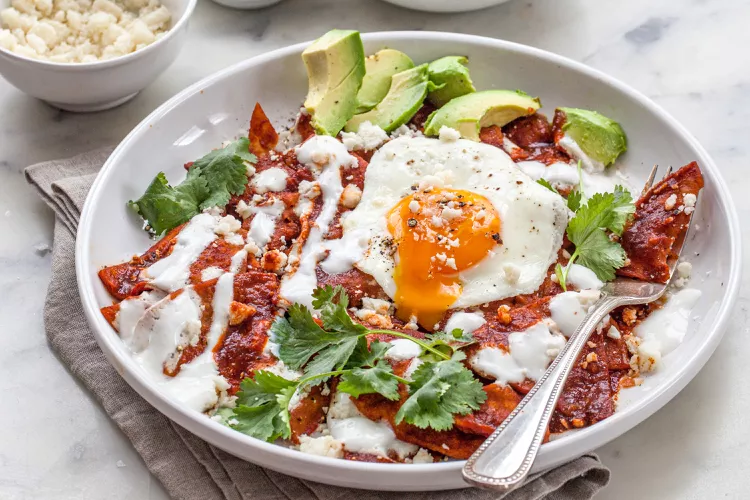

Chilaquiles

Description
Chilaquiles are basically corn tortilla pieces that are fried, cooked in salsa,
and sprinkled with cheese. They are often served for breakfast with eggs and
a side of beans or nopalitos.
Ingredients
- 2 corn tortillas, preferably stale, or left out overnight to dry out a bit,
quartered or cut into 6 wedges
- Corn oil, or other neutral oil for frying
- Kosher salt
- 1 1/2 to 2 cups red chile sauce or salsa verde
- Sprigs of epazote, optional
Steps
- Fry the tortillas:
- In a large sauté pan, coat pan generously with corn oil, (1/8 inch),
heat on medium high to high. When the oil is quite hot, add the tortillas,
fry until golden brown.
- Remove tortillas to a paper towel lined plate to soak up excess oil.
Sprinkle a little salt on the tortillas.
- Wipe pan clean of any browned bits of tortillas.
- Heat the salsa:
- Add 2 tablespoons of oil to pan, bring to high heat again.
- Add the salsa and let salsa cook for several minutes.
- If you have a few sprigs of epazote, add them to the salsa.
- Add fried tortillas to the salsa:
- Add the fried tortilla quarters to the salsa.
Gently turn over the pieces of tortilla until they are all
well coated with salsa. Let cook for a few minutes more.
- Remove from heat. Serve chilaquiles with garnishes and fried eggs and beans or nopalitos.
Home Page